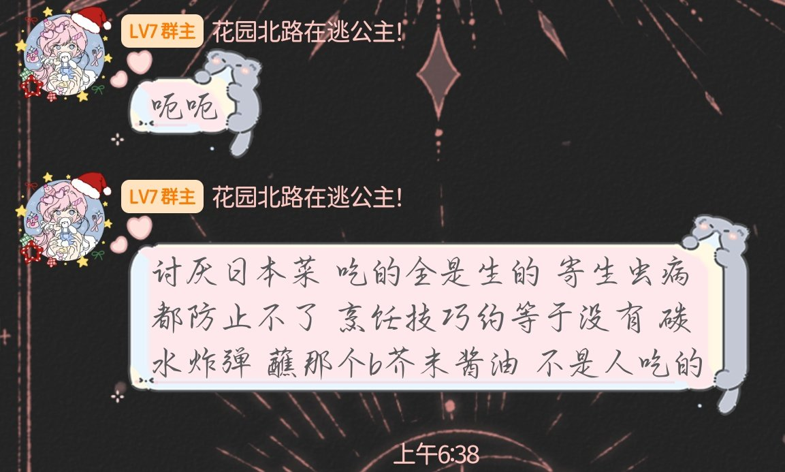
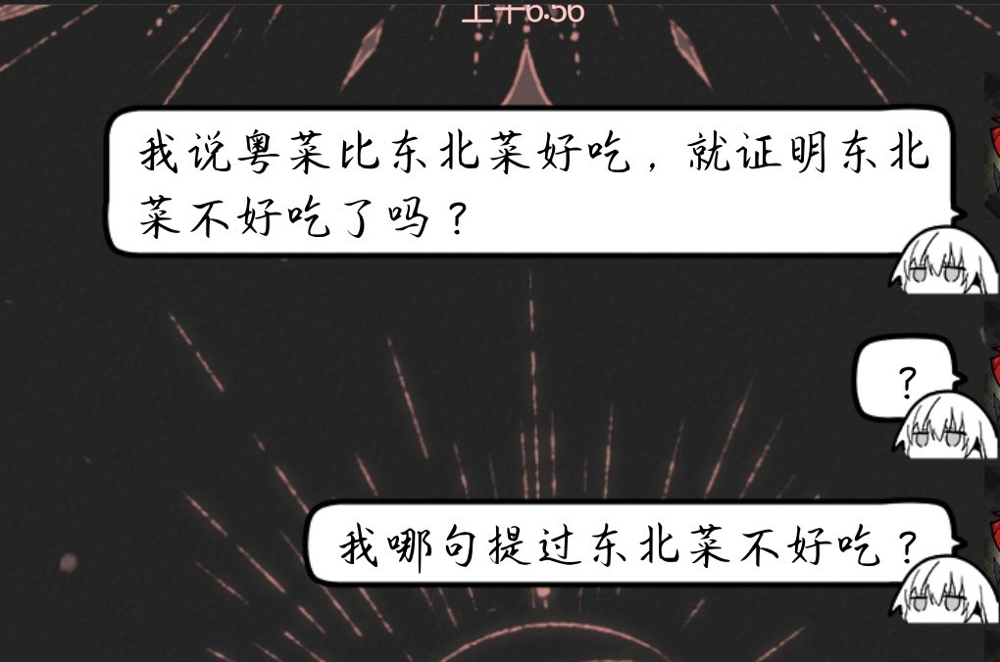

小虚空🍥
@tokerumaisurii
@kasaihitomii @EleanorAnatidae @SiKongYun 日本菜好吃爱吃，东北菜也不错，我都爱吃。对于你们的争议我觉得取决于时间点，如果她发表P1言论的时间早于你的东北菜油腻评论，也就是说是她说的在先，那她自己喜欢的菜系被这么点评了也受着。如果不是的话，那应该是你可能要收一收评论的热情？
但是主播你是谁，为什么突然叫上我了……？


Mon3tr
@kasaihitomii
@smiroyama @EleanorAnatidae 反驳：指的是去骂日本菜，自己喜欢东北菜就辱骂日本菜不是人吃的，让本m3采访一下@tokerumaisurii @SiKongYun 对日本菜不是人吃的有什么看法
私信辱骂：指的是本m3私信问到底哪句提出了东北菜不好吃
你是写程序的其中的逻辑指控应该看的明白，还是建议不要这样站队，这种扣帽子本m3蓝的盆 https://t.co/dKl31X058T